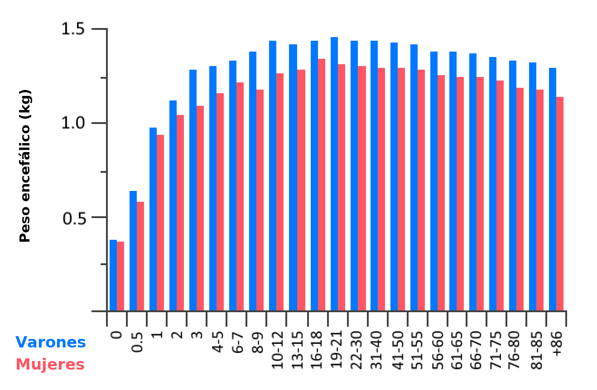
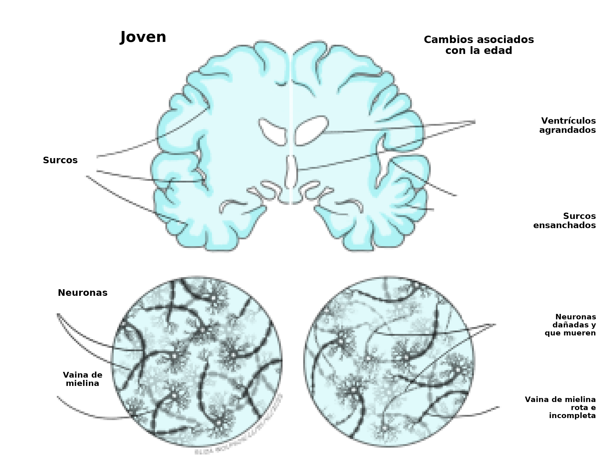

Envejecimiento: una perspectiva biológica y psicológica
Objetivos de aprendizaje
- Conocer y comprender los cambios biológicos y cognitivos que ocurren con el envejecimiento.
- Comprender los enfoques metodológicos para estudiar los efectos del envejecimiento y las estrategias que pueden existir para promover un envejecimiento cognitivo saludable.
- Comprender los cambios sensoriales sutiles que pueden ocurrir con el envejecimiento.
El envejecimiento puede definirse como un proceso gradual y continuo de cambios que son naturales, inevitables y empiezan al comienzo de la adultez. En el mundo, la población está envejeciendo, lo que aumenta el número y la proporción de personas mayores de 60 años. Esto se debe en gran medida al aumento de la esperanza de vida y tiene consecuencias en términos de salud y de cuestiones sociales y políticas. El proceso de envejecimiento produce cambios tanto físicos como mentales y, aunque puede haber cierta variabilidad individual en el momento exacto de esos cambios, son esperables e inevitables. Si bien el envejecimiento está influido sobre todo por un proceso genético, también pueden afectarlo distintos factores externos, entre ellos la alimentación, el ejercicio, el estrés y el tabaquismo. A medida que las personas envejecen, aumenta el riesgo de desarrollar ciertos trastornos, como la demencia, pero estos no son una consecuencia inevitable del envejecimiento.
Envejecimiento saludable se usa para describir la evitación o la reducción de los efectos no deseados del envejecimiento. Así, sus objetivos son promover la salud física y mental. En los seres humanos podemos definir la edad por la edad cronológica —cuántos años tiene una persona— y por la edad biológica, que se refiere a qué tan mayor parece una persona en términos de función fisiológica y de presencia de enfermedad. Todos los sistemas descritos en otras partes de este libro van a cambiar con el envejecimiento, y aquí nos centramos en los principales cambios cognitivos y sensoriales. La gerontología es el estudio de los procesos de envejecimiento y de las personas a lo largo de la vida. Abarca el estudio de los aspectos sociales, culturales, psicológicos, cognitivos y biológicos del envejecimiento, con diseños de estudio distintos, como se describe en la Tabla 6.1, y con consideraciones metodológicas específicas (véase el recuadro).
Tabla 6.1. Ventajas y desventajas de distintos enfoques metodológicos para estudiar el envejecimiento
|
Tipo de estudio |
Descripción |
Ventajas |
Desventajas |
|
Longitudinal |
Los datos se recogen de los mismos participantes, de forma repetida, en distintos momentos a lo largo del tiempo. |
Es más fácil controlar los efectos de cohorte, porque participa un solo grupo. Requiere (relativamente) menos participantes. |
Las tasas de abandono de los participantes aumentan con el tiempo. Exige muchos recursos hacer estudios durante períodos largos. Efectos de práctica. |
|
Transversal |
Los datos se recogen en un solo momento para más de una cohorte. Las cohortes se separan en grupos de edad. |
Eficiente: toda la recolección de datos se completa en un plazo relativamente corto, y los estudios pueden replicarse con facilidad. |
Es difícil equiparar los grupos de edad. Las diferencias se deben a diferencias de cohorte o históricas del entorno, la economía, etc. |
|
Longitudinal secuencial / transversal secuencial |
Dos o más diseños longitudinales, o transversales, separados en el tiempo. |
Repetir o replicar ayuda a separar los efectos de cohorte de los efectos de la edad. |
Es complejo de planificar. Puede ser costoso. |
|
Longitudinal acelerado |
Se recluta un rango amplio de edades, se lo divide en grupos y cada grupo se sigue durante unos años. |
Los datos longitudinales se recogen de los mismos participantes a lo largo del tiempo. La recolección transversal ocurre en un plazo más corto. |
No evita por completo los efectos de cohorte. |
| Credit: Claire Gibson |
Consideraciones metodológicas para los estudios del envejecimiento
Hay varias cuestiones que importa considerar al estudiar el envejecimiento. Muchas ocurren porque es difícil, o imposible, separar los efectos del envejecimiento de los efectos de vivir más tiempo o de haber nacido en otro momento.
- Las personas mayores habrán vivido más acontecimientos vitales. Esto será cierto incluso si las probabilidades de experimentar algo son las mismas a lo largo de la vida y no se relacionan con la edad. Significa que las personas mayores tienen más probabilidad de haber tenido accidentes, de haberse recuperado de una enfermedad o de tener una afección no diagnosticada.
- Las personas de distintas edades vivieron en épocas distintas y, por lo tanto, experimentaron factores sociales, económicos y de salud pública diferentes. Por ejemplo, el racionamiento cambió de forma drástica la salud de quienes crecieron a mediados del siglo XX. Es probable que la pandemia de coronavirus también tenga efectos directos e indirectos a más largo plazo.
- Cuanto mayores se vuelven las personas, más variables se vuelven sus trayectorias vitales. A menudo se encuentra más variabilidad en los datos de las personas mayores; sin embargo, también sabemos que los factores ambientales tienen un efecto fuerte sobre los datos conductuales.
- Los efectos no psicológicos pueden repercutir de forma directa en la psicología. Un buen ejemplo es la atención. A menudo, al envejecer, el rango de velocidad del movimiento se vuelve limitado o más lento. Como la atención suele desplazarse al mover la cabeza o los ojos, una reducción del rango de velocidad del movimiento repercute de forma directa en los desplazamientos de la atención. Por supuesto, no todos los desplazamientos de la atención implican movimientos manifiestos de la cabeza o de los ojos.
- Los efectos generalizados, como el enlentecimiento, tienen que controlarse o considerarse antes de proponer efectos más complejos o sutiles. Una forma de hacerlo es usar técnicas de análisis como las puntuaciones z, los cocientes o los gráficos de Brindley para comparar grupos de edad, y asegurarse de que siempre haya una línea de base o una condición de control dentro de cada grupo de edad.
Base biológica del envejecimiento
El envejecimiento per se implica numerosos cambios físicos, bioquímicos, vasculares y psicológicos que pueden identificarse con claridad en el encéfalo. A medida que envejecemos, nuestros encéfalos se reducen de volumen (Figura 6.10); el área más afectada es la corteza frontal, seguida por el estriado y, en menor medida, áreas como el lóbulo temporal, los hemisferios cerebelosos y el hipocampo. Esa reducción puede afectar tanto la sustancia gris como la blanca, y algunos estudios sugieren que puede haber diferencias entre los sexos en cuanto a qué áreas encefálicas muestran el mayor porcentaje de reducción con el envejecimiento. Los estudios de resonancia magnética (RM) permiten estudiar áreas específicas de atrofia encefálica con la edad y muestran que ocurren disminuciones tanto de la sustancia gris como de la blanca, aunque en distintas etapas de la vida (para más información, véase Farokhian et al., 2018). La reducción de la sustancia gris y de la blanca produce una expansión de los ventrículos encefálicos, en los que circula el líquido cefalorraquídeo (Figura 6.11). La corteza cerebral también se adelgaza con la edad y sigue un patrón similar al de la pérdida de volumen encefálico: es más pronunciada en los lóbulos frontales y en partes de los lóbulos temporales.


Plasticidad encefálica y cambios de los circuitos neurales
Durante el envejecimiento normal, los seres humanos y otros animales experimentan un deterioro cognitivo incluso en ausencia de enfermedad, como se explica más abajo. Parte de ese deterioro cognitivo puede atribuirse a una neuroplasticidad disminuida o, al menos, alterada. La neuroplasticidad se refiere a la capacidad del encéfalo de adaptarse y modificar su estructura y sus funciones en respuesta a los estímulos: es un proceso importante durante el desarrollo y se piensa que subyace al aprendizaje y a la memoria. En las personas jóvenes, el potencial de plasticidad encefálica es alto, porque atraviesan un aprendizaje rápido y un cartografiado de su entorno. Con la edad, esta capacidad de aprendizaje y, por lo tanto, de plasticidad, declina, aunque puede argumentarse que podemos conservar cierta capacidad de aprendizaje y de plasticidad mediante la práctica y técnicas basadas en el entrenamiento (véase el recuadro «Estrategias para promover un envejecimiento cognitivo saludable»). Los cambios sinápticos, que se piensa que contribuyen de forma importante al deterioro cognitivo asociado con la edad, implican alteraciones dendríticas: las dendritas se encogen, su ramificación se vuelve menos compleja y pierden espinas dendríticas. En conjunto, esto reduce la superficie de las dendritas disponible para hacer conexiones sinápticas con otras neuronas y, por lo tanto, reduce la eficacia y la plasticidad de los circuitos neurales y de las conductas cognitivas asociadas (para una revisión, véase Petralia et al., 2014).
Cambios celulares y fisiológicos
Ciertos rasgos patológicos, en particular la aparición de placas de beta-amiloide (Aβ) —a veces llamadas placas seniles— y de ovillos neurofibrilares, se asocian de forma típica con enfermedades que causan demencia, como la enfermedad de Alzheimer. Esos rasgos se describen en detalle en el capítulo Demencias. Sin embargo, es importante señalar que también ocurren con el envejecimiento, aunque en menor cantidad, y que están ubicados de forma más difusa que en la patología de la enfermedad, pero también pueden contribuir a la muerte celular y a la alteración de la función neuronal que se ven en el envejecimiento.
Otros cambios fisiológicos que ocurren con el envejecimiento, y de los que se sugirió que todos producen deterioro cognitivo, incluyen el estrés oxidativo, las reacciones inflamatorias y los cambios de la microvasculatura cerebral.
El estrés oxidativo es el daño que causan a las células los radicales libres que se liberan durante los procesos metabólicos normales. Sin embargo, en comparación con otros tejidos del cuerpo, el encéfalo es particularmente sensible al estrés oxidativo, que daña el ADN e inhibe los procesos de reparación del ADN. Ese daño se acumula a lo largo de la vida y produce disfunción y muerte celular. El envejecimiento se asocia con un nivel persistente de inflamación sistémica: se caracteriza por una concentración aumentada en la sangre de citocinas proinflamatorias y de otras quimiocinas que participan en producir un estado inflamatorio, junto con una activación aumentada de la microglía y de los macrófagos. La microglía está formada por las células inmunitarias residentes del encéfalo y, de forma típica, está en reposo hasta que la activa un antígeno extraño. Al activarse, produce citocinas proinflamatorias para combatir la infección, seguidas por citocinas antiinflamatorias para restaurar la homeostasis. Durante el envejecimiento parece haber una activación crónica de la microglía, que induce un estado constante de neuroinflamación, del que se mostró que es perjudicial para la función cognitiva (Bettio et al., 2017; Di Benedetto et al., 2017). Por último, el encéfalo que envejece se asocia habitualmente con una disminución de la densidad microvascular, un engrosamiento de los vasos, un aumento de la rigidez vascular y un aumento de la tortuosidad vascular (o distorsión, torsión), que en conjunto comprometen el flujo sanguíneo cerebral. Cualquier alteración de ese tipo del flujo sanguíneo cerebral es probable que produzca cambios de la función cognitiva (por ejemplo, véase Ogoh, 2017).
Cambios de los neurotransmisores
Durante el envejecimiento, el encéfalo también experimenta cambios en los niveles de neurotransmisores y de sus receptores en distintas regiones, que involucran en gran medida, aunque no de forma exclusiva, los sistemas de dopamina, serotonina y glutamato. Es importante comprender los cambios neuroquímicos asociados con el envejecimiento, porque pueden ser relevantes al considerar blancos terapéuticos destinados a estabilizar o mejorar aquellas funciones encefálicas que de forma típica se deterioran con la edad.
- La dopamina es un neurotransmisor monoaminérgico que cumple un papel neuromodulador en muchas funciones del sistema nervioso central, entre ellas la función ejecutiva, el control motor, la motivación, la activación, el reforzamiento y la recompensa. Durante el envejecimiento, se informó que los niveles de dopamina declinan alrededor del 10 % por década desde el comienzo de la adultez, y se los asoció con un deterioro del rendimiento motor y cognitivo (Berry et al., 2016; Karrer et al., 2017). Es posible que los niveles reducidos de dopamina se deban a reducciones de la producción de dopamina, de las neuronas que la producen y/o de las sinapsis que responden a ella.
- La serotonina, también conocida como 5-hidroxitriptamina (5-HT), funciona como neurotransmisor inhibitorio y como hormona. Ayuda a regular el estado de ánimo, la conducta, el sueño y la memoria, todos los cuales declinan con la edad. También se informó que con la edad disminuyen los niveles de distintos receptores de serotonina y del transportador de serotonina (5-HTT). Las áreas particularmente afectadas por la pérdida de neuronas serotoninérgicas incluyen la corteza frontal, el tálamo, el mesencéfalo, el putamen y el hipocampo (Wong et al., 1984).
- El glutamato es el principal neurotransmisor excitatorio del sistema nervioso central, sintetizado tanto por células neuronales como por células gliales, y los niveles altos de glutamato, que causan neurotoxicidad, están implicados en varios trastornos neurodegenerativos, entre ellos la esclerosis múltiple, la esclerosis lateral amiotrófica, la enfermedad de Alzheimer y la esquizofrenia. La neurotransmisión en las sinapsis glutamatérgicas subyace a varias funciones, como la conducta motora, la memoria y la emoción, que se ven afectadas durante el envejecimiento. Se informa que los niveles de glutamato declinan con el envejecimiento: las personas de más edad tienen concentraciones más bajas de glutamato en la corteza motora, junto con la sustancia gris parietal, los núcleos basales (ganglios basales) y la sustancia blanca frontal (Sailasuta et al., 2008).
Envejecimiento y genética
La genética del envejecimiento humano es compleja y multifacética, y se basa en el supuesto de que la duración de la vida está, al menos en parte, determinada genéticamente. Esto se apoya en evidencia de que los familiares cercanos de una persona centenaria tienden a vivir más, y de que los gemelos genéticamente idénticos (monocigóticos) tienen duraciones de vida más parecidas que los gemelos no idénticos (dicigóticos). La teoría genética del envejecimiento se basa en los telómeros, que son segmentos repetidos de ADN (ácido desoxirribonucleico) presentes en los extremos de nuestros cromosomas. El número de repeticiones de un telómero determina la duración máxima de la vida de una célula, porque cada vez que una célula se divide se pierden múltiples repeticiones. Una vez que los telómeros se redujeron a cierto tamaño, la célula llega a un punto de crisis y se le impide seguir dividiéndose; así, la célula muere y no puede reemplazarse. Muchos creen que esta es una explicación demasiado simplificada de la genética del envejecimiento y que, en realidad, varios factores genéticos, en combinación con factores ambientales, contribuyen al proceso de envejecimiento (véanse revisiones para más información: Melzer et al., 2020; Rodriguez-Rodero et al., 2011).
Cambios de los sistemas cognitivos
Los cambios de los sistemas y procesos biológicos descritos arriba se traducen en cambios de todos los procesos psicológicos. Algunos cambios se encuentran en todos los sistemas pero, como describen las secciones siguientes, los cambios con la edad no son uniformes y hay cambios específicos en sistemas cognitivos como la memoria y el control y la inhibición atencionales.
Uno de los hallazgos más sólidos de la investigación sobre el envejecimiento es que hay un enlentecimiento general de los procesos (Salthouse, 1996). En prácticamente todas las tareas, las personas mayores responden más lentamente, en promedio, que las personas más jóvenes, lo que refleja muchos de los cambios biológicos descritos arriba. Es un hallazgo tan ubicuo que es importante controlar o dar cuenta del enlentecimiento antes de considerar cualquier otra teoría del cambio cognitivo. Además, el enlentecimiento puede tener efectos más sutiles que los simples cambios de los tiempos de reacción. Si un proceso cognitivo requiere más de un paso, una demora en el procesamiento del primer paso puede hacer que toda la cadena de procesamiento no pueda continuar, o que la información no pueda sincronizarse entre distintos subprocesos (véase el recuadro «Consideraciones metodológicas»).
Memoria
El envejecimiento parece tener efectos mayores en algunos tipos de memoria que en otros. La memoria de acontecimientos vividos personalmente (es decir, la memoria episódica) presenta el deterioro más claro con la edad (Ronnlund et al., 2005). Dentro de ella, el deterioro después de los 60 años parece ser mayor en las tareas de recuerdo que exigen que la persona participante recuerde los ítems con libertad, en comparación con las tareas en las que se le pide que reconozca si los ítems se vieron antes (La Voie & Light, 1994). En un metaanálisis de estudios en los que se preguntaba a las personas participantes si recordaban el contexto o el detalle de un acontecimiento recordado, Koen y Yonelinas (2014) encontraron una diferencia significativa en la evocación del contexto, pero una reducción mucho menor de la capacidad de juzgar la familiaridad de una ocurrencia previa.
Los cambios de otros tipos de memoria son menos claros. La memoria semántica, es decir, la memoria de hechos e información, muestra menos deterioro (Nyberg, L. et al., 2003), al igual que la memoria procedimental y la memoria a corto plazo (Nilsson, 2003). La memoria de trabajo se distingue de la memoria a corto plazo en que los ítems en memoria por lo general tienen que procesarse o manipularse, y esta también declina con la edad (Park et al., 2002).
Al considerar estos estudios sobre la memoria, siempre hay que recordar que hay una variabilidad considerable en el rendimiento de la memoria, incluso en los dominios en los que los estudios encuentran evidencia consistente de deterioro. Es probable que algunas de estas diferencias se deban a diferencias en la tasa de pérdida de estructura encefálica (a veces llamada «reserva cerebral»). Otra parte de la variabilidad probablemente se deba a diferencias en qué tan bien las personas pueden afrontar la situación o encontrar estrategias alternativas para realizar las tareas de memoria. Por ejemplo, se argumentó que algunas personas mayores interpretan la sensación de familiaridad o de reconocimiento de forma distinta que las personas más jóvenes, y que tienen más probabilidad de inferir que evocaron el acontecimiento. Niveles más altos de educación más temprano en la vida, así como niveles más altos de actividad física o mental más adelante, se asocian con una mejor memoria. Esta variabilidad ilustra la importancia de considerar el muestreo de participantes y las diferencias de cohorte en la investigación sobre el envejecimiento.
Estrategias para promover un envejecimiento cognitivo saludable
Recientemente se demostró que la aplicación de intervenciones conductuales y de enfoques no farmacológicos mejora algunos aspectos del rendimiento cognitivo y promueve un envejecimiento cognitivo saludable. Esto es de particular relevancia en la edad avanzada, cuando el rendimiento cognitivo declina en dominios particulares. Se piensa que esos enfoques, entre ellos el entrenamiento cognitivo, la neuromodulación y el ejercicio físico, mejoran la salud cognitiva al rescatar redes encefálicas que son particularmente sensibles al envejecimiento y/o al aumentar la función de aquellas redes que son relativamente resistentes al envejecimiento. Sin embargo, aunque esos enfoques pueden estar respaldados por estudios psicológicos relativamente extensos, en términos de mejoría o estabilización de la capacidad cognitiva, la evidencia de cambios subyacentes de la estructura o la función biológicas, que se necesita para sostener cambios a largo plazo de las conductas cognitivas, es más limitada.
- Entrenamiento cognitivo o «cerebral»: un programa de actividades mentales regulares del que se cree que mantiene o mejora las capacidades cognitivas. Se basa en los supuestos de que la práctica mejora el rendimiento, de que mecanismos cognitivos similares subyacen a una variedad de tareas y de que practicar una tarea mejorará el rendimiento en habilidades o tareas estrechamente relacionadas. Ese entrenamiento abarca tanto la estimulación cognitiva como las intervenciones basadas en estrategias; por lo general se administra por computadora u otro medio electrónico, y busca restaurar o aumentar funciones cognitivas específicas mediante tareas cognitivas desafiantes que, idealmente, se adaptan al rendimiento de la persona y se vuelven progresivamente más difíciles. Metaanálisis recientes de ensayos controlados aleatorizados de entrenamiento cognitivo en personas mayores sanas y en personas con deterioro cognitivo leve (DCL) informan resultados positivos en las funciones cognitivas a las que se dirige el entrenamiento (Basak et al., 2020; Chiu et al., 2017).
- Neuromodulación: se mostró que las técnicas no invasivas de estimulación encefálica, como la estimulación transcraneal con corriente continua (tDCS) y la estimulación magnética transcraneal repetitiva (EMTr), mejoran de forma moderada el funcionamiento cognitivo en las personas mayores (Huo et al., 2021) y mejoran el rendimiento cognitivo en personas con DCL (Jiang et al., 2021). La tDCS está aprobada como una técnica neuromoduladora segura, que entrega una corriente eléctrica débil mediante electrodos colocados en el cuero cabelludo para estimular de forma directa blancos corticales. La EMTr usa una bobina electromagnética para entregar un pulso magnético que puede dirigirse a regiones corticales específicas para modular la actividad neuronal y promover la plasticidad. Aunque algunos estudios combinaron el entrenamiento cognitivo y los enfoques de neuromodulación para mejorar el rendimiento cognitivo, hay evidencia limitada de un rendimiento superior al informado para cualquiera de los dos enfoques usado de forma aislada.
- Actividad física: se informó que la actividad física estructurada, en forma de ejercicio aeróbico moderado a vigoroso, preserva y mejora las funciones cognitivas en las personas mayores. En particular, mejora de forma moderada la función cognitiva global en las personas mayores, y mejora la atención, la memoria y la función ejecutiva en personas con DCL (Erickson et al., 2019; Song et al., 2018). Sin embargo, los mecanismos por los cuales el ejercicio tiene estos efectos no se comprenden por completo, y es probable que los mecanismos del ejercicio varíen según factores individuales como la edad, el estado de ánimo y el estado de salud de base.
Control atencional
Un ejemplo de enlentecimiento es que la respuesta a una clave se vuelve más lenta con la edad. La magnitud de la diferencia de los tiempos de respuesta entre grupos de edad varía según el tipo de clave. Una clave puede usarse para crear una respuesta de alerta, que aumenta la vigilancia y la preparación para la tarea. Las personas mayores son más lentas para mostrar esta respuesta de alerta (Festa-Martino et al., 2004). Una clave también puede dirigir la atención de forma simbólica hacia un lugar específico. Un ejemplo de clave simbólica que se usa con frecuencia es una flecha que apunta a un lugar particular. Varios estudios mostraron que las personas mayores son comparativamente más lentas para responder a este tipo de clave (véase Erel & Levy, 2016, para una revisión extensa y útil). Por otro lado, las claves también pueden capturar la atención de forma automática, por ejemplo un ruido fuerte o una luz brillante. A diferencia de las claves de alerta y de las simbólicas, numerosos estudios muestran que las personas mayores mantienen una respuesta de orientación automática (por ejemplo, Folk & Hoyer, 1992). Es probable que los efectos atencionales de arriba se deban, en parte, a otros efectos del envejecimiento, como el cambio sensorial (véase la sección sobre el cambio sensorial con la edad). Por ejemplo, en el estudio de Folk y Hoyer (1992), las personas mayores eran más lentas para responder a las claves en forma de flecha solo cuando eran pequeñas, no cuando eran más grandes. Esto ilustra que hay que considerar los efectos de los cambios de la percepción en el envejecimiento al interpretar los efectos del envejecimiento.
Los procesos atencionales también suelen medirse con tareas de búsqueda visual. En estas tareas, las personas participantes buscan un blanco particular entre distractores. El blanco puede especificarse de antemano («buscar la H roja») o definirse por su relación con los distractores («encontrar el que es distinto»). El distractor puede ser parecido al blanco, lo que por lo general lleva a una búsqueda más lenta (Duncan & Humphreys, 1989), o ser lo bastante distinto como para que resalte (Treisman & Gelade, 1980). Los distractores pueden ser completamente distintos del blanco, lo que permite buscar a partir de un rasgo (por ejemplo, una H roja entre A azules), o compartir algunos rasgos con el blanco, lo que suele llamarse búsqueda de conjunción (por ejemplo, una H roja entre A rojas y A azules). El rendimiento en la búsqueda visual puede usarse para evaluar varios mecanismos atencionales, como el desplazamiento de la atención, la atención a distintos rasgos, los tiempos de respuesta y las estrategias atencionales.
Las personas mayores muestran un rendimiento más lento que las personas más jóvenes en la búsqueda de conjunción, en comparación con un rendimiento relativamente conservado en la búsqueda por rasgos (Erel & Levy, 2016). Esto puede considerarse análogo a las diferencias de las claves descritas arriba. El rendimiento rápido en la búsqueda por rasgos suele considerarse automático e involuntario (Treisman & Gelade, 1980), y el rendimiento más lento en la búsqueda de conjunción, como algo que requiere procesos más complejos y voluntarios. Las personas mayores tienen un rendimiento más lento cuando se les exige hacer más desplazamientos de la atención para encontrar el blanco (Trick & Enns, 1998). Sin embargo, también es probable que cumplan un papel el deterioro de otros procesos, como la discriminación del blanco y de los distractores, la inhibición y la desvinculación de cada lugar, y el enlentecimiento general.
Inhibición
A diferencia de dirigir la atención hacia un blanco, también necesitamos ignorar, evitar o suprimir acciones irrelevantes. En psicología esto suele llamarse «inhibición», y puede referirse a la capacidad de ignorar ítems o colores distractores en la pantalla, o de resistir el impulso de hacer una acción específica repetida o fuertemente señalada. En la investigación sobre el envejecimiento, a menudo se mide con la tarea de Stroop (en la que las personas participantes deben nombrar una palabra e ignorar el color de la tinta), una tarea de ir/no ir (go/no-go; en la que deben presionar un botón en respuesta a un blanco en la mayoría de los ensayos, y evitar esa pulsación en unos pocos ensayos con un estímulo distinto) o tareas de flancos o de distractores (en las que se mide el rendimiento con una distracción y sin ella).
Hasher y Zacks (1988) propusieron que un deterioro de la inhibición asociado con la edad subyace a muchas diferencias de rendimiento entre las personas mayores y las más jóvenes. Pueden encontrarse déficits en muchas tareas que parecen basarse en la inhibición. Kramer et al. (2000) pidieron a las personas que buscaran un ítem blanco entre distractores. Por ejemplo, los tiempos de reacción de las personas mayores se veían más afectados (enlentecidos) cuando también había en la pantalla un distractor particularmente saliente (visible). Las personas mayores tampoco muestran un «priming negativo» tan fuerte como las personas más jóvenes. El priming negativo se encuentra cuando un distractor de un ensayo previo se convierte en el blanco del ensayo actual. Este efecto prolongado sobre el rendimiento se atribuye a que el distractor fue inhibido; por lo tanto, si la inhibición está reducida, el efecto de priming negativo también se reduce.
Por otro lado, algunos de los hallazgos de déficits inhibitorios pueden atribuirse a otros factores. Por ejemplo, las diferencias de rendimiento en la tarea de Stroop pueden deberse en parte a diferencias en la velocidad de procesamiento de los colores y de las palabras con la edad (Ben-David & Schneider, 2009), y a la inhibición de las respuestas más que al perfil sensorial del distractor en sí (Hirst et al., 2019). Un metaanálisis de Rey-Mermet & Gade (2018) sugirió que es probable que el déficit inhibitorio de las personas mayores se limite a la inhibición de las respuestas dominantes.
Cambios sensoriales con la edad
La mayoría de nosotros habrá notado a alguien que usa anteojos para leer, o que sube el volumen del televisor para oír mejor los diálogos de una película o de una serie preferida. Aunque suele suponerse que estos son los efectos principales del envejecimiento, los cambios sensoriales con la edad son variados y algunos son bastante sutiles.
Visión
Con la edad hay cambios en el ojo y en las vías visuales del encéfalo. Una reducción de la cantidad en la que el ojo enfoca a distancias cercanas hace que casi todas las personas necesiten anteojos para leer en algún momento. El cristalino también se vuelve más grueso y se amarillea, lo que reduce la cantidad de luz que entra al nervio óptico y al encéfalo. Esto afecta qué tan bien podemos ver tanto el color como la forma. Para la visión del color, el amarilleo del ojo tiene un efecto mayor sobre las longitudes de onda más cortas, es decir, las de los azules y los verdes (Ruddock, 1965; Said, 1959). Así, por ejemplo, al igualar el rojo y el verde para que parezcan del mismo brillo, hay que agregar más verde en las personas participantes mayores que en las más jóvenes (Fiorentini et al., 1996).
Para la percepción de la forma, la reducción de la cantidad de luz que atraviesa el ojo reduce la capacidad de las personas de resolver el detalle fino (Weale, 1975; Kulikowski, 1971). Además, la pérdida y el deterioro neurales con la edad también contribuyen al declive de la capacidad visual, en especial para determinar la forma de los objetos. En general, para los patrones más gruesos (frecuencias espaciales más bajas), es probable que las diferencias de rendimiento entre las personas mayores y las más jóvenes se deban a cambios corticales. Para los patrones de detalle más fino (frecuencias espaciales altas), es más probable que la pérdida se deba a factores ópticos. Nótese que los anteojos corrigen la agudeza, que está impulsada sobre todo por la capacidad de detectar y discriminar patrones pequeños y de detalle fino, pero las pérdidas visuales son mucho más amplias y sutiles que esto.
Las personas mayores también tienen una capacidad reducida de ver el movimiento y las cosas que se mueven. Las personas mayores tienden a juzgar mal la velocidad de los ítems en movimiento (Snowden & Kavanagh, 2006), y la velocidad mínima necesaria para discriminar la dirección del movimiento es más alta en las personas mayores que en las más jóvenes (Wood & Bullmore, 1995). Por otro lado, otros estudios encontraron que los déficits del procesamiento del movimiento asociados con la edad están ausentes o son específicos de estímulos particulares (Atchley & Andersen, 1998), y también hay informes de mejoras del rendimiento con la edad. Por ejemplo, las personas mayores son más rápidas que las más jóvenes para discriminar la dirección de patrones grandes en movimiento (Betts et al., 2005; Hutchinson et al., 2011). Esto ilustra un punto importante sobre el envejecimiento y la visión: muchos de los déficits del procesamiento del movimiento asociados con la edad no se deben a déficits en el nivel del procesamiento del movimiento per se, sino a déficits de sensibilidad más tempranos en la cadena de procesamiento. Al presentar estímulos a personas mayores, conviene tener en cuenta que cambios leves en los detalles de los estímulos (por ejemplo, su velocidad o su contraste) pueden producir cambios drásticos de la visibilidad para las personas mayores en comparación con las más jóvenes (Allen et al., 2010).
Audición
Como en la visión, los efectos de la edad sobre la audición incluyen deterioros en el oído y también en el encéfalo. También de forma similar a la visión, hay una reducción de la sensibilidad a las frecuencias altas. En la audición, las frecuencias altas se perciben como notas agudas. El oído pierde sensibilidad con la edad, y esta pérdida empieza con la detección de los tonos agudos y después pasa a afectar la detección de los tonos graves (Peelle & Wingfield, 2016).
Aunque la pérdida de la capacidad de oír tonos puros es muy frecuente en las personas mayores, uno de los problemas de audición que se informan con más frecuencia es la pérdida de la capacidad de discriminar el habla cuando está en medio de ruido de fondo (Moore et al., 2014). Esto causa dificultades para oír conversaciones en las multitudes, y también los diálogos de las películas y de la televisión. El déficit se encuentra tanto en medidas subjetivas como objetivas de la audición en las personas mayores. Es interesante que hay una asociación entre la capacidad de oír el habla en medio del ruido y el deterioro cognitivo (Dryden et al., 2017). Una sugerencia es que esto refleja una pérdida general en todos los sistemas del encéfalo, pero otra sugerencia interesante es que el esfuerzo y la carga de afrontar sistemas sensoriales en deterioro hacen que las personas rindan peor en las tareas cognitivas.
Tacto
La percepción del tacto es quizá el sentido menos comprendido cuando se trata del envejecimiento. Usamos las manos para sentir la textura y la forma, ya sea presionando o acariciando una superficie. Más allá de esto, todo el cuerpo es sensible al tacto en alguna medida: por ejemplo, el tacto y la presión en los pies afectan el equilibrio, y el tacto en el cuerpo nos dice si estamos cómodos. Sabemos que el envejecimiento afecta el estado de la piel y también la capacidad de controlar nuestros movimientos. La hidratación, la elasticidad y la distensibilidad de la piel se reducen con el aumento de la edad (Zhang & Duan, 2018). Cambiar la piel va a cambiar qué tan bien puede sentir diferencias de textura y de forma. También hay cambios en las áreas del encéfalo que procesan el tacto, y en las vías que conectan la piel con el encéfalo (McIntyre et al., 2021); ambos afectan la sensibilidad táctil básica (Bowden & McNulty, 2013; Goble et al., 1996).
Gusto y olfato
El gusto y el olfato son de importancia crítica para la calidad de vida y la salud, y también muestran deterioro con el envejecimiento. La pérdida de apetito es un problema frecuente en las personas mayores, y la pérdida del olfato y del gusto contribuye a ella. La pérdida del gusto o del olfato es desagradable a cualquier edad: vuelve la comida desagradable al paladar, pero también dificulta identificar cuándo una comida está en mal estado o cuándo hay suciedad. El cambio del olfato y del gusto es gradual a lo largo de la vida, pero a los 65 años hay diferencias medibles en la capacidad de detectar sabores u olores (Stevens, 1998).
Ideas clave
- El envejecimiento causa cambios naturales e inevitables tanto de la estructura como de la función encefálicas; sin embargo, todavía no comprendemos por completo la tasa de cambio ni los procesos involucrados.
- Los cambios del encéfalo que pueden afectar las funciones cognitivas y sensoriales ocurren en los niveles molecular, sináptico y celular; algunos, aunque no todos, están impulsados por factores genéticos.
- Comprender los mecanismos del envejecimiento es importante, porque esto puede identificar enfoques para intentar aliviar el deterioro de la cognición y de las funciones sensoriales asociado con la edad, junto con identificar factores psicológicos y del modo de vida que pueden ayudar a promover un envejecimiento cognitivo saludable.
Referencias y lecturas complementarias
Allen, H. A., Hutchinson, C. V., Ledgeway, T., & Gayle, P. (2010). The role of contrast sensitivity in global motion processing deficits in the elderly. Journal of Vision, 10 (15). 1-10 https://doi.org/10.1167/10.10.15
Atchley, P., & Andersen, G. J. (1998). The effect of age, retinal eccentricity, and speed on the detection of optic flow components. Psychology and Aging, 13(2), 297-308. https://doi.org/10.1037/0882-7974.13.2.297
Basak, C., Qin, S., & O’Connell, M.A. (2020). Differential effects of cognitive training modules in healthy aging and mild cognitive impairment: A comprehensive meta-analysis of randomized controlled trials. Psychology and Aging, 35(2), 220–49. https://doi.org/10.1037/pag0000442
Ben-David, B. M. & Schneider, B. A. (2009). A sensory origin for color-word effects in aging: A meta-analysis. Aging Neuropsychology and Cognition, 16(5), 505-534. https://doi.org/10.1080/13825580902855862
Bettio, L.E.B., Rajendran, L., & Gil-Mohapel, J. (2017). The effects of aging in the hippocampus and cognitive decline. Neuroscience & Biobehavioral Reviews, 79, 66-86. https://doi.org/10.1016/j.neubiorev.2017.04.030
Betts, L. R., Taylor, C. P., Sekuler, A. B. & Bennett, P. J. (2005). Aging reduces center-surround antagonism in visual motion processing. Neuron, 45(3), 361-366. https://doi.org/10.1016/j.neuron.2004.12.041
Berry, A.S., Shah, V.D., Baker, S.L., Vogel, J.W., O’Neil, J.P., Janabi, M., Schwimmer, H.D., Shawn, M.M., & Jagust, W.J. (2016). Aging affects dopaminergic neural mechanisms of cognitive flexibility. The Journal of Neuroscience, 36(50), 12559-12569. https://doi.org/10.1523%2FJNEUROSCI.0626-16.2016
Bowden, J.L. & McNulty, P. A. (2013). Age-related changes in cutaneous sensation in the healthy human hand. Age, 35(4), 1077-1089. https://doi.org/10.1007%2Fs11357-012-9429-3
Chiu, H.-L., Chu, H., Tsai, J.-C., Liu, D., Chen, Y.-R., Yang, H.-L., & Chou, K.-R, (2017). The effect of cognitive-based training for the healthy older people: A meta-analysis of randomized controlled trials. PLoS ONE, 12(5), e0176742. https://doi.org/10.1371/journal.pone.0176742
Di Benedetto, S., Muller, L., Wenger, E., Duzel, S., & Pawelec, G. (2017). Contribution of neuroinflammation and immunity to brain aging and the mitigating effects of physical and cognitive interventions. Neuroscience and Biobehavioral Reviews, 75, 114-128. https://doi.org/10.1016/j.neubiorev.2017.01.044
Dryden, A., Allen, H. A., Henshaw, H., & Heinrich, A. (2017). The association between cognitive performance and speech-in-noise perception for adult listeners: A systematic literature review and meta-analysis. Trends in Hearing, 21. https://doi.org/10.1177/2331216517744675
Duncan, J., & Humphreys, G. W. (1989). Visual search and stimulus similarity. Psychological Review, 96(3), 433–458. https://doi.org/10.1037/0033-295X.96.3.433
Erel, H. & Levy, D. A. (2016) Orienting of visual attention in aging. Neuroscience and Biobehavioral Reviews, 69, 357-380. https://doi.org/10.1016/j.neubiorev.2016.08.010
Erickson, K.I., Hillman, C., Stillman, C.M., Ballard, R.M., Bloodgood, B., Conroy, D.E., Macko, R., Marquez, D., Petruzzello, S.J., & Powell, K.E. (2019). Physical activity, cognition, and brain outcomes: A review of the 2018 physical activity guidelines. Medicine & Science in Sports & Exercise, 51(6), 1242-1251. https://doi.org/10.1249/mss.0000000000001936
Farokhian, F., Yang, C., Beheshti, I., Matsuda, H., & Wu, S. (2018) Age-related gray and white matter changes in normal adult brains. Aging and disease, 8(6), 899-909. https://doi.org/10.14336%2FAD.2017.0502
Festa-Martino, E., Ott, B.R., & Heindel, W.C. (2004). Interactions between phasic alerting and spatial orienting: effects of normal aging and Alzheimer’s disease. Neuropsychology, 18(2), 258-68. https://doi.org/10.1037/0894-4105.18.2.258.
Fiorentini, A., Porciatti, V., Morrone, M. C. & Burr, D. C. (1996). Visual ageing: Unspecific decline of the responses to luminance and colour. Vision Research, 36(21), 3557-3566. https://doi.org/10.1016/0042-6989(96)00032-6
Folk, C.L., & Hoyer, W.J. (1992). Aging and shifts of visual spatial attention. Psychology and Aging, 7(3), 453–465. https://doi.org/10.1037//0882-7974.7.3.453
Goble, A.K., A.A. Collins, & R.W. Cholewiak, (1996). Vibrotactile threshold in young and old observers: The effects of spatial summation and the presence of a rigid surround. Journal of the Acoustical Society of America, 99(4), 2256-2269. https://doi.org/10.1121/1.415413
Hasher, L. & Zacks, R. T. (1979). Automatic and effortful processes in memory. Journal of Experimental Psychology-General, 108(3), 356-388. https://doi.org/10.1037/0096-3445.108.3.356
Hirst, R. J., Kicks, E. C., Allen, H. A. & Cragg, L. (2019). Cross-modal interference-control is reduced in childhood but maintained in aging: A cohort study of stimulus- and response-interference in cross-modal and unimodal stroop tasks. Journal of Experimental Psychology-Human Perception and Performance, 45(5), 553-572. https://doi.org/10.1037%2Fxhp0000608
Huo, L., Zhu, X., Zheng, Z., Ma, J., Ma, Z., Gui, W., & Li, J. (2021). Effects of transcranial direct current stimulation on episodic memory in older adults: a meta-analysis. Journal of Gerontology: Series B, 76(4), 692–702. https://doi.org/10.1093/geronb/gbz130
Hutchinson, C., Allen, H. & Ledgeway, T. (2011) When older is better: Superior global motion perception in the elderly. Perception, 40, 115-115.
Jiang, L., Cui, H., Zhang, C., Cao, X., Gu, N., Zhu, Y., Wang, J., Yang, Z., & Li, C. (2021). Repetitive transcranial magnetic stimulation for improving cognitive function in patients with mild cognitive impairment: A systematic review. Frontiers in Aging Neuroscience, 12. https://doi.org/10.3389/fnagi.2020.593000
Karrer, T.M., Josef, A.K., Mata, R., Morris, E.D., & Samanez-Larkin, G.R. (2017). Reduced dopamine receptors and transporters but not synthesis capacity in normal aging adults: A meta-analysis. Neurobiology of Aging, 57, 36-46. https://doi.org/10.1016/j.neurobiolaging.2017.05.006
Koen, J.D., & Yonelinas, A.P. (2014). The effects of healthy aging, amnestic mild cognitive impairment, and Alzheimer’s disease on recollection and familiarity: a meta-analytic review. Neuropsychology Review 24(3), 332-54. https://doi.org/10.1007/s11065-014-9266-5.
Kramer, A. F., Hahn, S., Irwin, D. E. & Theeuwes, J. (2000). Age differences in the control of looking behavior: Do you know where your eyes have been? Psychological Science, 11(3), 210-217. https://doi.org/10.1111/1467-9280.00243
Kulikowski, J. J. (1971). Some stimulus parameters affecting spatial and temporal resolution of the human eye. Vision Research, 11(1), 83-93. https://doi.org/10.1016/0042-6989(71)90206-9
La Voie, D., & Light, L. L. (1994). Adult age differences in repetition priming: A meta-analysis. Psychology and Aging, 9(4), 539–553. https://doi.org/10.1037/0882-7974.9.4.539
Liu, X. Z. & Yan, D. (2007). Ageing and hearing loss. Journal of Pathology, 211(2), 188-197. https://doi.org/10.1002/path.2102
McIntyre, S., Nagi, S.S., McGlone, F., & Olausson, H. (2021). The effects of ageing on tactile function in humans. Neuroscience, 464, 53-58. https://doi.org/10.1016/j.neuroscience.2021.02.015
Melzer, D., Pilling, L.C., & Ferrucci, L. (2020) The genetics of human ageing. Nature Reviews Genetics, 21, 88-101. https://doi.org/10.1038/s41576-019-0183-6
Moore, D. R., Edmundson-Jones, M., Dawes, P., Fortnum, H., McDormack, A., Pierzycki, R.H., & Munro, K.J. (2014). Relation between speech-in-noise threshold, hearing loss and cognition from 40-69 years of age. PLoS One, 9(9), e107720. https://doi.org/10.1371/journal.pone.0107720
Nilsson L-G. (2003) Memory function in normal aging. Acta Neurologica Scandinavica, 107, 7–13. https://doi.org/10.1034/j.1600-0404.107.s179.5.x
Nyberg, L., Maitland, S.B., Ronnlund, M., Backman, L., Dixon, R.A., Wahlin, A., Nilsson, L.G. (2003). Selective adult age differences in an age- invariant multifactor model of declarative memory. Psychology and Aging, 18(1), 149–160. https://doi.org/10.1037/0882-7974.18.1.149
Ogoh, S. (2017). Relationship between cognitive function and regulation of cerebral blood flow. Journal of Physiological Sciences, 67, 345-351. https://doi.org/10.1007/s12576-017-0525-0
Park, D. C., Lautenschlager, G. Hedden, T., & Davidson, N. S. (2002). Models of visuospatial and verbal memory across the adult life span. Psychology and Aging, 17(2), 299-320. https://doi.org/10.1037/0882-7974.17.2.299
Peelle, J. E. & Wingfield, A. (2016). The neural consequences of age-related hearing loss. Trends in Neurosciences, 39(7), 486-497. https://doi.org/10.1016/j.tins.2016.05.001
Petralia, R.S., Mattson, M.P., & Yao, P.J. (2014). Communication breakdown: the impact of ageing on synapse structure. Ageing Research Reviews, 14, 31-42. https://doi.org/10.1016/j.arr.2014.01.003
Rey-Mermet, A. & Gade, M. (2018). Inhibition in aging: What is preserved? What declines? A meta-analysis. Psychonomic Bulletin & Review, 25, 1695-1716. https://doi.org/10.3758/s13423-017-1384-7
Rodriguez-Rodero, S., Fernandez-Morera, J.L., Menendez-Torre, E., Calvanese, V., Fernandez, A.F., & Fraga, M.F. (2011). Aging genetics and aging. Aging and Disease, 2, 186-195. https://www.ncbi.nlm.nih.gov/pmc/articles/PMC3295054/
Ronnlund, M., Nyberg, L., Backman, L., & Nilsson, L.G. (2005). Stability, growth and decline in adult life span development of declarative memory: cross-sectional and longitudinal data from a population-based study. Psychology and Aging, 20(1), 3–18. https://doi.org/10.1037/0882-7974.20.1.3
Ruddock, K. H. (1965). The effect of age upon colour vision. II. Changes with age in light transmission of the ocular media. Vision Research, 5(1-3), 47-58. https://doi.org/10.1016/0042-6989(65)90074-X
Said, F. S. W. R. A. (1959).The variation with age of the spectral transmissivity of the living human crystalline lens. Gerontologia, 3, 213-231. https://doi.org/10.1159/000210900
Sailasuta, N., Ernst, T., & Chang, L. (2008). Regional variations and the effects of age and gender on glutamate concentrations in the human brain. Magnetic Resonance Imaging, 26(5), 667–75. https://doi.org/10.1016/j.mri.2007.06.007
Salthouse, T. A. (1996). The processing-speed theory of adult age differences in cognition. Psychological Review, 103(3), 403-428. https://doi.org/10.1037/0033-295X.103.3.403
Snowden, R. J. & Kavanagh, E. (2006). Motion perception in the ageing visual system: Minimum motion, motion coherence, and speed discrimination thresholds. Perception, 35(1), 9-24. https://doi.org/10.1068/p5399
Song, D., Yu, D.S.F., Li, P.W.C., & Lei, Y. (2018) The effectiveness of physical exercise on cognitive and psychological outcomes in individuals with mild cognitive impairment: A systematic review and meta-analysis. International Journal of Nursing Studies, 79, 155–164. https://doi.org/10.1016/j.ijnurstu.2018.01.002
Stevens, J. C., Cruz, L. A., Marks, L. E. & Lakatos, S. (1998). A multimodal assessment of sensory thresholds in aging. Journals of Gerontology Series B-Psychological Sciences and Social Sciences, 53(4), 263-272. https://doi.org/10.1093/geronb/53b.4.p263
Treisman, A. M. & Gelade, G. (1980). A feature-integration theory of attention. Cognitive Psychology, 12(1), 97-136. https://doi.org/10.1016/0010-0285(80)90005-5
Trick, L.M., & Enns, J.T. (1998). Lifespan changes in attention: The visual search task. Cognitive Development. 13(3), 369–386. https://doi.org/10.1016/S0885-2014(98)90016-8
Weale, R. A. (1975) Senile changes in visual acuity. Transaction of the Ophthalmological Society, 95(1), 36-38.
Wong, D. F., Wagner, H.N., Dannals, R.F., Links, J.M., Frost, J.J., Ravert, H.T., Wilson, A.A., Rosenbaum, A.E., Gjedde, A., Douglass, K.H., Petronis, J.D., Folstein, M.F., Toung, J.K.T., Bums, H.D., & Kuhar, M.J. (1984). Effects of age on dopamine and serotonin receptors measured by positron tomography in the living human brain. Science, 226(4681), 1393-1396. https://doi.org/10.1126/science.6334363
Wood, J. M. & Bullmore, M. A. (1995). Changes in the lower displacement limit for motion with age. Ophthalmic and Physiological Optics, 15(1), 31-36. https://doi.org/10.1046/j.1475-1313.1995.9592789.x
Zhang, S.B. & Duan, E. K. (2018). Fighting against skin aging: The way from bench to bedside. Cell Transplantation, 27(5), 729-738. https://doi.org/10.1177/0963689717725755